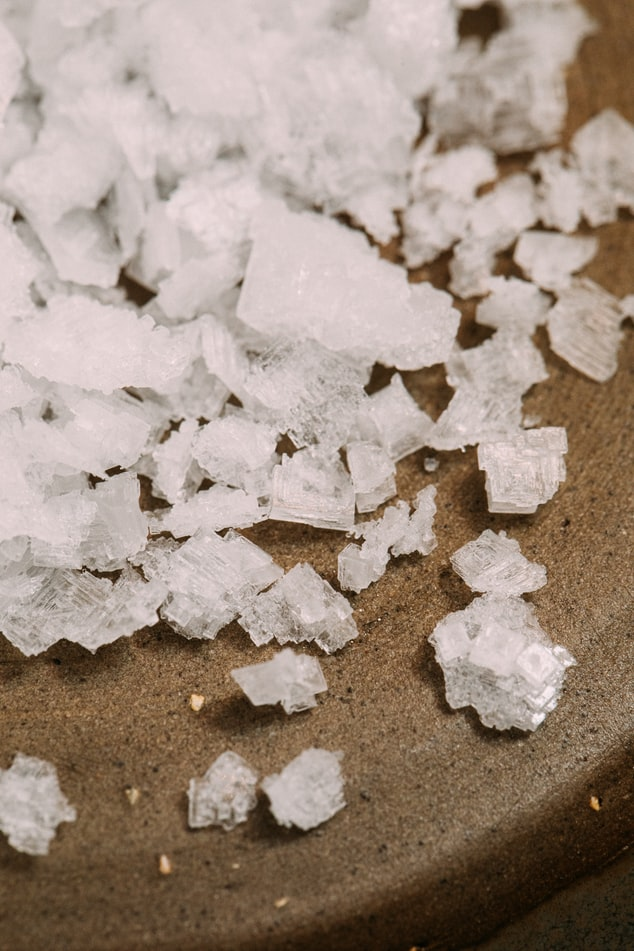

- html
- css
- javascript
he Fourth Industrial Revolution represents a fundamental change in the way we live, work and relate to one another.
Fourth industrial revolution
After the financial crisis of 2008, the petrochemical industry saw prolonged, impressive growth from 2010 to 2018, during which the value pool grew by 8 percent per annum. High utilization levels and favorable feedstock dynamics eventually led to a so-called supercycle (a time when petrochemical margins are higher than usual) from 2016 to 2018.
Generally speaking, industry utilization (typically at a product-chain level) determines the marginal producers, and the price of oil determines the steepness of the cost curve in many product chains. With this in mind, the following factors contributed to the petrochemical industry’s performance:
